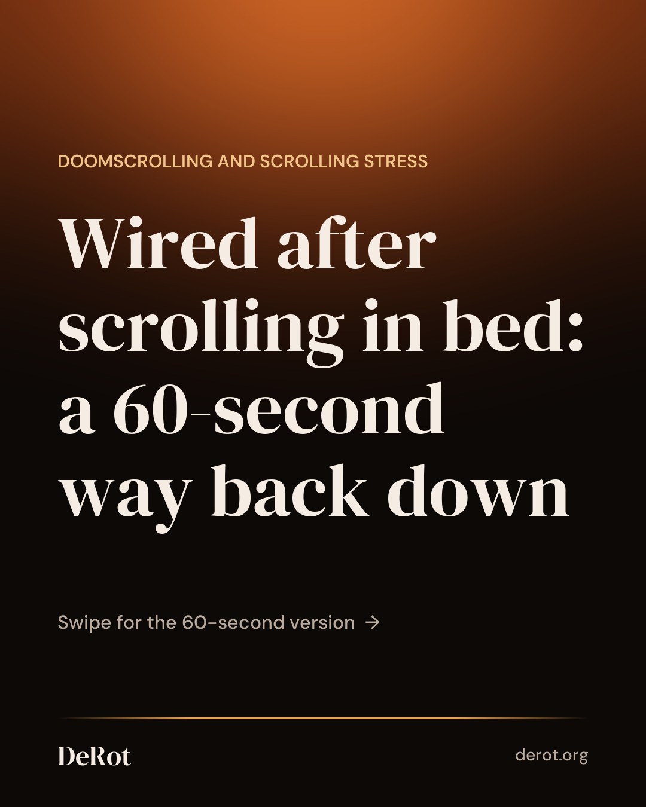
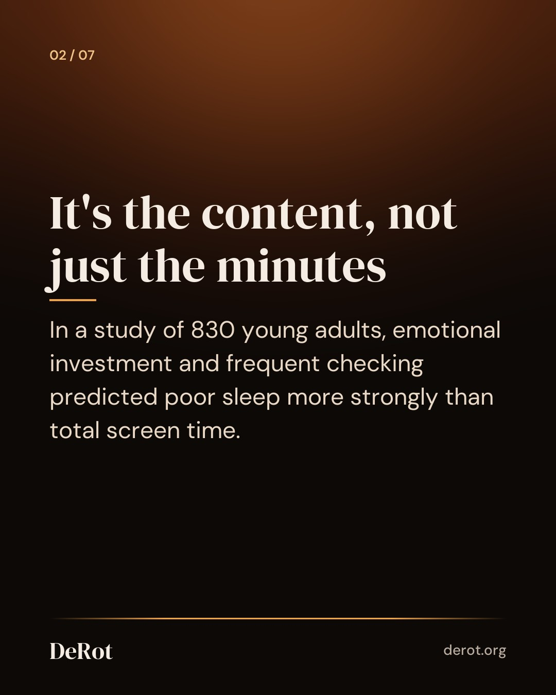
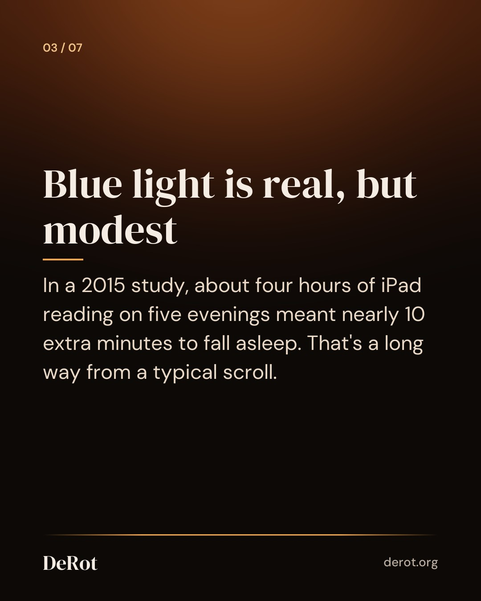
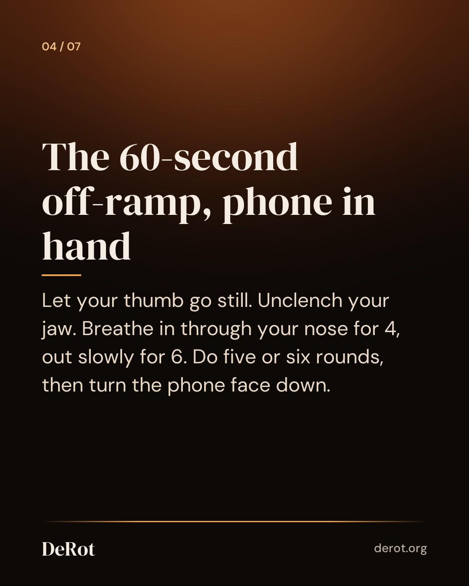
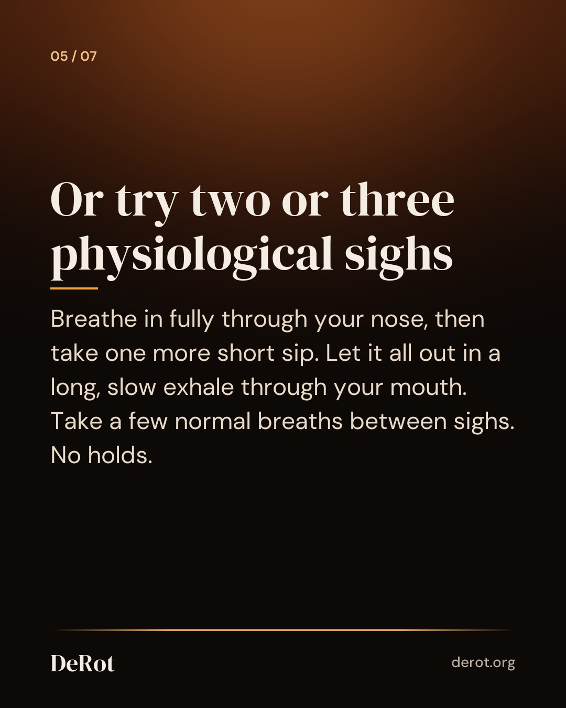
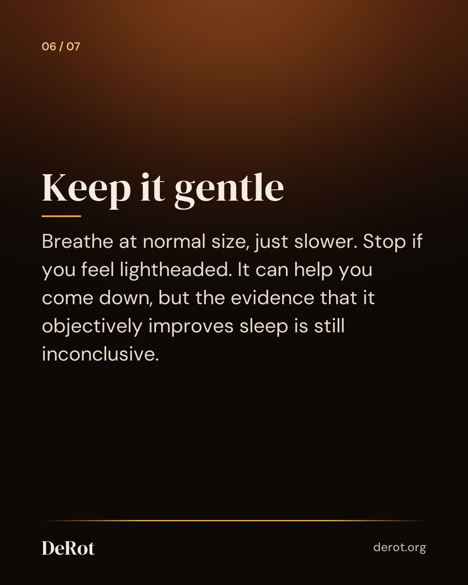
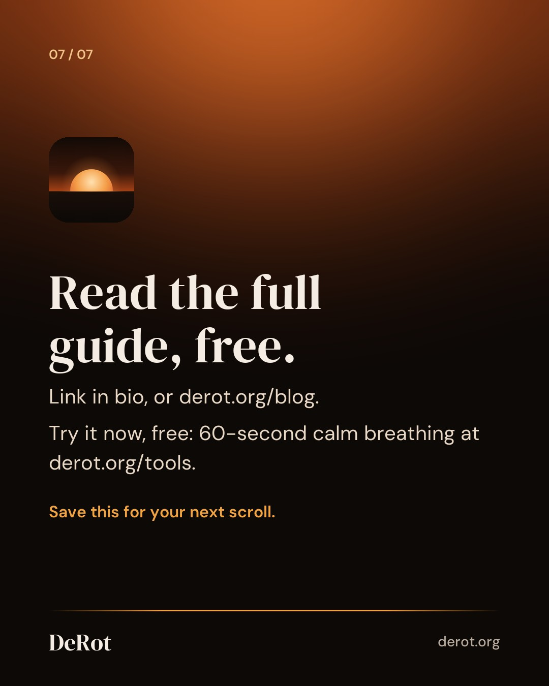

Doomscrolling at Night: Why You're Wired and a 60-Second Way Down
Carousel (Instagram)







Instagram caption
You picked up the phone to check one thing. Half an hour later: tight jaw, quick heartbeat, sleep further away. Bad news grabs your attention more strongly than good news, and alarming headlines engage the brain's threat detection. That's useful when there's something to deal with. At 11:40 pm with the lights off, not so much. This isn't a study result, just an illustration: ten minutes in a heated comment thread can leave you more wound up than forty minutes of cooking videos. By the third or fourth slow breath, the exhale should get easier to stretch out. Your shoulders settle into the mattress and the itch for "one more" goes quiet. Some nights the shift is obvious, some nights it's subtle. If 4-6 feels long, try 3-5. What matters is keeping the exhale longer than the inhale. And if you pick the phone back up anyway, that's fine. There's no streak to break. Run it again in ten minutes. Stop if you feel dizzy or lightheaded. If trouble sleeping, anxiety, or a racing heart keeps coming back, it's worth talking to a professional. There's a free 60-second calm breathing timer on our site if you'd like something to pace you. Full guide: link in bio. #breathwork #nervoussystemregulation #sleephygiene #doomscrolling #slowbreathing
Threads
Something useful I came across: in a study of 830 young adults, emotional investment in social media predicted poor sleep more strongly than total screen time. So it's less about the minutes and more about how wound up the feed leaves you. My off-ramp in bed: in for 4, out for 6, five or six rounds. Then the phone goes face down. https://derot.org/blog/doomscrolling-at-night/
You get into bed, pick up the phone to check one thing, and half an hour later your jaw is tight and sleep feels further away. If that sounds familiar, the problem may be less about screen minutes and more about how charged the content is. Here's a 60-second way down that works without getting up: breathe in through your nose for 4 and out slowly for 6, five or six times. Or do two or three physiological sighs. Then turn the phone face down. Keep the breaths gentle, and stop if you feel lightheaded. It won't knock you out like a sleeping pill, but it can help you stop winding yourself up. The full guide covers the blue light question, common mistakes, and small evening setups that help.
Schedule (UTC)
| queued | 2026-10-09T16:30:00+00:00 | ||
| threads | queued | 2026-10-09T16:30:00+00:00 | |
| queued | 2026-10-09T23:30:00+00:00 |